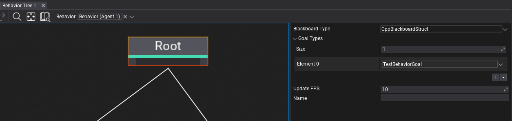

Behavior Knowledge
Every Behavior in order to perform logical action needs to contain a certain knowledge about the environment, enemies, goals, and sensors. Behavior Knowledge is data-only container to store all data related to behavior.
Knowledge consists of:
- Blackboard - instance of the behaviour blackboard (custom data)
- Goals - list of all active goals of the behaviour
- Tree nodes relevancy - information about active nodes
- Tree nodes state - data for all active nodes
Tip
Blackboard or Goals values can be custom structures or objects (FlaxEngine.Object/ScriptingObject). Structures are recommended for small values, for larger data containers use object.

Blackboard
Blackboard is used to store information for Behavior Tree logic. For example, it can contain current movement speed of the agent provided by gameplay code to be used for pathfollowing. A typical workflow would be to create a blackboard object class or structure and fill it will fields or properties. Blackboard type can be assigned on a Root node (see picture above) of the Behavior Tree.
using FlaxEngine;
/// <summary>
/// Blackboard for BT with object entries.
/// </summary>
public class CSharpBlackboardObject : FlaxEngine.Object
{
public float MoveSpeed;
public int AmmoLeft;
public Actor Target;
public bool HasTarget => Target != null;
}
/// <summary>
/// Blackboard for BT with struct entries.
/// </summary>
public struct CSharpBlackboardStruct
{
public float MoveSpeed;
public int AmmoLeft;
public Actor Target;
public bool HasTarget => Target != null;
}
Tip
Blackboard or Goals types can have Custom Editor defined for more complex editing experience or customizations.
Goals
Goal is used to store information for Behavior Tree logic about a very specific action. For example, it can contain target character to attack by the NPC or target object to follow or go to. This data could be placed inside the Blackboard but having a separation of basic tasks for AI can help when creating a more complex system where BTs can be reused by different agent types (eg. via node decorator Has Goal and selectors to access goal data). Goal types used by tree can be assigned on a Root node (see picture above).
using FlaxEngine;
/// <summary>
/// Simple agent goal data.
/// </summary>
public struct MoveToGoal
{
public Actor Target;
public float MoveSpeed;
}
Knowledge Selector
Selector provides unified access to Behavior Knowledge data via path (eg. Blackboard/AmmoLeft or Goal/MoveToGoal/MoveSpeed). It can be used to read or write to the knowledge field or property selected by the user in the node properties panel (via picker with a drop-down list and search field). Each serializer provides Set, Get and TryGet methods to access the knowledge data.